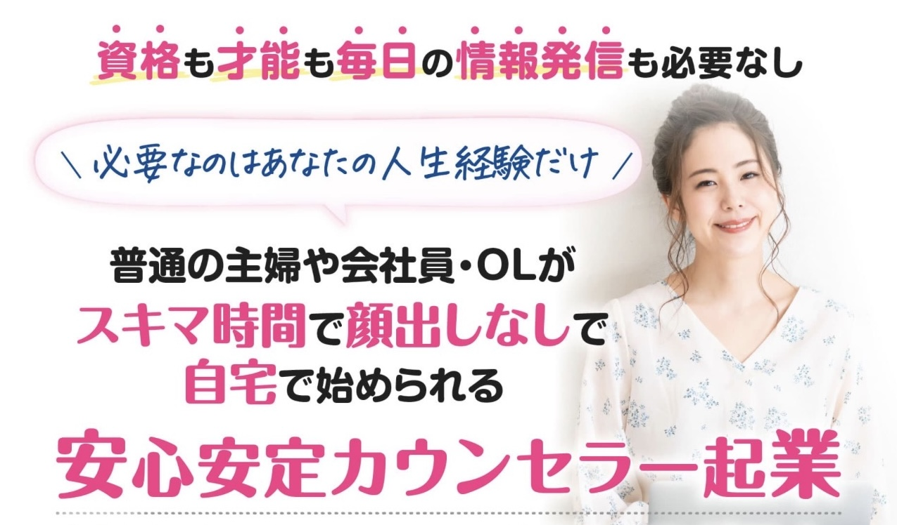

カウンセラー起業タイプ診断
自分に合うカウンセラーの働き方は、どれでしょう。12問・約2分の診断で、あなたのタイプが分かります。

無料で診断をはじめる12問・約2分・登録なしで始められますTHE PATTERN
カウンセラーとして人の役に立ちたい。そう思いながら、最初の一歩の前で止まっている。そんな方の話を、矢場田はこれまで何度も聞いてきました。
どれか一つでも当てはまったなら、続きを読んでください。この診断は、あなたを「判定する」ものではありません。今のあなたに合った、始め方を見つけるためのものです。
NOT YOU
起業の一歩が止まるとき、多くの人は「自分には何かが足りない」と考えます。資格がない。経験が浅い。人前に出るのが苦手。毎日発信するなんて無理。
でも、実際に動き出した先輩たちの話を聞くと、止めていたのは足りなさではありませんでした。順番の思い込みです。
これらは、あなたの性格ではなく、起業の世界で長く信じられてきた「やり方」です。やり方が変われば、止まっていた足は動きます。
悩んでいる人は、肩書きがすごい人を探しているとは限りません。同じ道を通って、乗り越えてきた人に話を聞いてほしいと感じる人が、たくさんいます。
あなたが経験したつらさ、乗り越え方、いまの思い。それは資格では作れない価値です。資格があるから価値があるのではなく、価値があるから、必要な人に届きます。
自分のタイプを診断する12問・約2分・無料LOOK BACK
これは、特別なことではありません。やさしい人ほど、慎重に、そして自分の価値を小さく見積もります。聞き上手で、人の話を最後まで聴ける。それは、カウンセラーにとって一番大事な力です。
THE STORY
この診断とプログラムを作った矢場田つとむは、もともと、人前に出るタイプではありません。子どもの頃からネガティブで、クラスでいちばんおとなしい人。ほとんど喋らない子でした。
学生時代に不登校になり、学校をやめました。やめた直後にうつ病になり、21歳のときには、難病指定の潰瘍性大腸炎を患います。医者から「一生治らない病気」と告げられ、人生に絶望しました。生死をさまようほどの状態だったと、本人は話しています。
そんなとき、偶然、心の悪循環を断ち切る瞬間が訪れます。それが、のちに「こころの悪循環を断ち切るセラピー」になりました。数年後、このセラピーを人に伝える仕事を始め、10年間で6000件以上のカウンセリングを重ねます。
だから矢場田は、「キラキラした起業女子にならなければ」と思い込んで疲れている人の気持ちも、「自分には何もない」と感じる人の気持ちも、よく分かります。内向的で、地味で、目立たなくていい。そのままのあなたで始められる方法を、体系化したのが、安心安定のカウンセラー起業です。
「それまではキラキラ起業女子になりなさいと教わりましたが、自分の本質とは合っていないと思っていました。矢場田先生を見て、内向的でもいいんだと安心しました」3日間プログラムの進行役を務めた受講生の言葉（要約）
3 WALLS
矢場田のもとには、毎日のように相談が届きます。よくあるのは、次の3つです。
この悩みを分解すると、カウンセラーが収入を安定させるまでに、3つの壁があります。
経験が足りなくて、人や症状に合わせた対応ができないのでは、という不安。だから、そのまま使える「型」が要ります。矢場田の10年間・6000件以上の経験から作ったテンプレートが、その型です。
人を集められなければ、どんなに技術があっても仕事になりません。毎日の発信に頼らず、悩んでいる人が自分から見つけてくれる仕組みが、答えになります。
重い相談を真正面から受け止め続けて、カウンセラー自身が消耗する。内向的な人ほど、セールスやクロージングも苦手になりがちです。無理なく続けられる進め方に、整えておく必要があります。
この3つの壁は、才能や根性で越えるものではありません。順番と仕組みで、越えられます。
REVERSE
多くの人は、技術を十分に身につけてから、お客様を迎えようと考えます。ところが、準備を重ねるほど、「まだ足りない」と感じて、いつまでも始められなくなります。
安心安定のカウンセラー起業は、順番が逆です。まずデビューして、売れてから、カウンセリングの技術を身につけていく。最初は「それでいいの？」と驚く人が多いそうです。でも、実際に行動してみると、成果が出てくるので、気持ちが安定していきます。収入が立つので、お金の負担も軽くなります。
「サクッとデビューして売れてから、技術を身につけていく。最初は驚きましたが、実際に動いてみると、成果が出てきてメンタルも安定しました」実践者の言葉（インタビュー動画から要約）
「インプットだけで終わる講座」とは違い、記事を書く、ホームページを作る、スキルを練習するなど、実際に手を動かして進めます。実践に必要なものは、スターターキットとして用意されています。手ぶらで始めても、数ヶ月後にはデビューできる、というのが矢場田の説明です。
ふつう：資格を取る → 技術を磨く → 毎日発信する → 顔を出す → 自分で集客を探す
安心安定：型を使ってデビュー → 顔出しなしで発信 → 仕組みで集客 → 売れてから技術を磨く
WHY IT STOPS
カウンセリングの技術を学んでも、起業の一歩が出ないことがあります。技術と、仕事にする方法は、別のものだからです。
壁を越えるために必要なのは、才能ではなく、次の3つの仕組みです。
悩みの言葉で検索する人に、届く形で見つけてもらう。毎日の投稿に頼らない集客の考え方です。
顔出しなしで、オンラインで。場所にしばられず、自宅から日本中の人の悩みに向き合えます。
初回の進め方を、テンプレートにしておく。そのまま使えるので、ゼロから悩まずに始められます。
この3つが揃うと、「何から始めればいいか分からない」という状態が、「次はこれをやる」に変わります。
INSIGHT IS NOT ENOUGH
診断で自分のタイプが分かると、「そうかも」と腑に落ちます。でも、その気づきだけで、明日から何かが変わるわけではありません。
大事なのは、診断の結果を自分の仕事にどうつなげるか。そのために用意したのが、無料の3日間チャレンジプログラムです。
3 DAYS CHALLENGE
あなたの“人生”経験が感謝される起業法
診断で分かったタイプに合わせて、始め方を具体的に見ていく無料のプログラムです。次の3つを、順番にお伝えします。
ブログやSNSで顔や本名を出さなくても、信頼を得て、お客様に選ばれるための書き方があります。
カウンセリングを100％オンラインで行う体制の作り方。自宅にいながら、場所にしばられず仕事ができます。
初回の進め方などを、そのまま使える型にしています。難しいスキルの習得に時間をかけず、始められます。
WHAT YOU WILL SEE
夜にオンライン（Zoom）で、矢場田が3日間にわたってお話しします。見逃した回は、アーカイブでご覧いただけます。
資格がなくても、顔を出さなくても、毎日のSNSがなくても始められる、カウンセラー起業の全体像。家族との時間を大切にしながら、人の役に立つ働き方を見つけます。
初心者でも、ベテランのようなセッションができるテンプレートの考え方。人生経験が、そのまま価値になる理由をお話しします。
学んだスキルを、必要としている人に届けるための集客の考え方。毎日の発信に頼らない届け方をお伝えします。
日程は、参加のご案内でお知らせします。
診断をして、無料で参加する12問・約2分・登録なしで始められますBONUS
「あなたの人生経験がどう活かせる？」。12問に答えると、あなたに合う働き方のタイプと、同じタイプの先輩の言葉が見られます。
行動を続けられる人と、途中で止まる人の違いを、矢場田が動画で解説します。
特典は、3日間チャレンジ専用のLINEオープンチャットへの参加で受け取れます。
YOUR GUIDE
株式会社ライフビジョン代表 / カウンセラー専門コンサルタント
矢場田は、高校1年生のときに、対人緊張から不眠症になり、不登校、引きこもりになりました。動悸や息切れにも悩まされました。21歳のときには、難病の潰瘍性大腸炎と診断されています。
10代から20代にかけて悩み続け、そして研究し続けました。そのなかで「こころの悪循環を断ち切るセラピー」を開発し、こころの悩みにも、難病にも、向き合い続けてきました。
その経験をもとに、カウンセラーとして6000件以上のカウンセリングを実施。ノウハウを体系化して「安心安定のカウンセラー起業講座」としてまとめました。初心者でも安定してセッションができる進め方と、カウンセラー特化型の自動集客を、受講生に伝えています。
悩んでいる方の心を癒す社会貢献をしながら、自分の心も豊かになる。そういう働き方を、お伝えしています。
VOICES
受講生のインタビュー動画から、本人の言葉を選びました。掲載前に、矢場田さんを通して本人の確認を取ります。個人の感想であり、成果を保証するものではありません。
FAQ
はい。3日間チャレンジプログラムへの参加は無料です。診断も無料です。
大丈夫です。顔出しなしで、本名も出さずに活動する方法をお伝えします。オープンチャットも、チャット専用のニックネームとアイコンで、匿名で参加できます。
受講生には、パソコンが得意ではなかった方も多くいます。まずは3日間で全体像を見て、自分にできそうかを確かめてください。
オンライン（Zoom）で、自宅から参加できます。アーカイブの配信もあるので、時間が合わないときは、あとから見られます。
大丈夫です。初心者でも安定してセッションができる進め方を、型として用意しています。
普段のLINEとは分けて使える、みんなと話せるサービスです。ID交換は不要で、どのチャットに入っているかは、LINEの友だちには知られません。いつでも退出できます。入室時に「LINEを悪用した詐欺にご注意ください」と表示されますが、これは全てのオープンチャットで表示されるものです。
いつでも、メールの配信停止やオープンチャットの退出ができます。無理な勧誘はしません。
START HERE
診断は無料で、登録なしで始められます。結果のあと、3日間チャレンジのご案内が表示されます。
無料で診断をはじめる12問・約2分※携帯メールアドレス・icloudの場合メールが届かないため、それ以外のアドレスでご登録ください。配信がいらない場合は、後から解除できます。